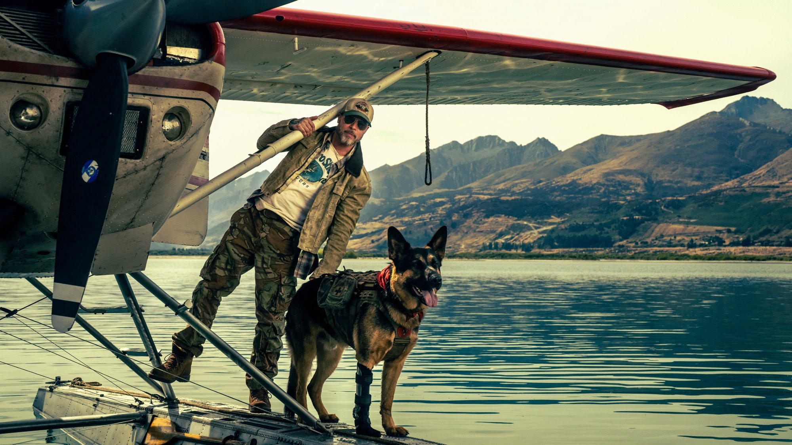
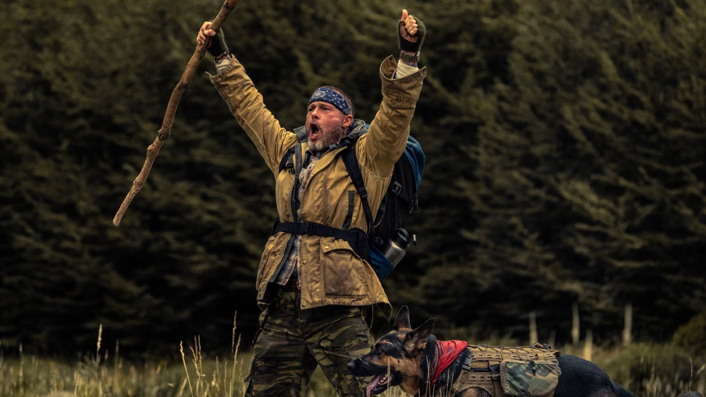
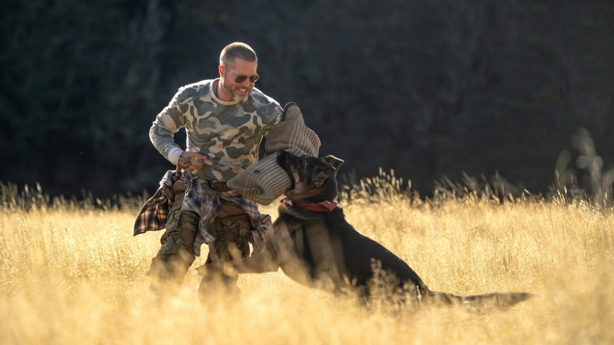

Heart of the Beast
Brad Pitt, un cane da guerra e 58 miglia di Alaska: un survival che vale più per il legame che per il pericolo
Un uomo bagnato fradicio, un cane ferito e un lago che sembra voler trascinare a fondo entrambi: David Ayer, a fronte di un budget di 82 milioni di dollari, ha scelto di raccontare una sopravvivenza senza supereroi. Heart of the Beast - Nel profondo selvaggio, nelle sale italiane dal 24 settembre con Eagle Pictures, è un survival che punta quasi tutto su un solo rapporto, quello tra Brad Pitt e il pastore tedesco Odin. Per una buona metà dei suoi 101 minuti la scommessa è vinta. Poi arriva la retorica.
Di cosa parla Heart of the Beast?
James Belmont, sergente maggiore delle forze speciali in congedo, vola sopra l'Alaska con il suo ex cane da combattimento. L'idrovolante precipita. Restano un uomo con il corpo a pezzi, un animale con le sue cicatrici e circa 58 miglia di natura selvaggia da attraversare, con grizzly, lupi e freddo a ostacolare il cammino. Accanto a Pitt ci sono J.K. Simmons, nel ruolo di Watkins, e Anna Lambe, in quello di Amber. La sceneggiatura è di Cameron Alexander, la fotografia di Mauro Fiore.
Niente di più, e meglio così: la premessa è lineare e il film non finge il contrario. Il piacere sta nel come, non nel che cosa.

Un film sul peso, più che sul pericolo
La parte migliore di Heart of the Beast è anche la più semplice. Sabrina Colangeli, su Taxidrivers, nota come Ayer traduca il trauma in oggetti concreti: lo zaino carico, i vestiti zuppi che tirano verso il fondo del lago. È la scelta giusta, perché rende fisico ciò che altrimenti sarebbe dichiarato a parole. Il peso diventa immagine, e l'immagine arriva prima delle parole.
C'è poi una decisione di sottrazione che ci è piaciuta: la musica quasi non c'è. Sempre secondo Colangeli, la partitura di Jared Michael Fry resta ai margini fino al finale, e il risultato è un film in cui contano il rumore dell'acqua, il respiro, il passo. Il silenzio costringe a guardare i due protagonisti e lascia spazio a un'interpretazione fisica, fatta più di fatica che di parole. Pitt stesso, intervistato da Collider, ha detto che fisicamente è il film più duro che abbia mai girato: «Ti svegli, ti bagni, e resti bagnato per tutto il giorno».
E poi c'è Odin. Secondo il regista, citato sempre da Collider, il cane che lo interpreta, Uber, era un cane da ricerca e soccorso con un passato di elicotteri e salvataggi prima di diventare attore. È il cuore del film, e lo dice anche Pitt, che a Collider spiega di voler guadagnarsi la fiducia del cane: «Voglio che sappia: ci sono io».

Dove il film inciampa
Mauro Donzelli, su ComingSoon, dà tre stelle su cinque e individua con precisione i punti deboli: un sentimentalismo che a tratti si fa retorica sul cane, flashback e finale che minano il realismo costruito nella prima parte, un patriottismo calcato più che organico. Siamo d'accordo su quasi tutto. Un film che aveva dimostrato di sapersi fidare dell'immagine a un certo punto si mette a spiegare, e la spiegazione pesa più dello zaino di Belmont.
Non è un difetto da poco, perché tocca il tema stesso del film. Ayer racconta due veterani, uomo e animale, che portano addosso la guerra. Funziona quando la guerra resta nei corpi; funziona meno quando torna come discorso. Anche i lupi e gli orsi, che pure scandiscono la sopravvivenza, hanno il compito di tenere alta la tensione, ma è il rapporto a reggere il film, non la minaccia. Chi cerca un thriller di pura adrenalina può restare con la sensazione di un cammino lungo.
Come lo ha accolto la critica?
Bene: su Rotten Tomatoes le recensioni positive sono l'86% su 174, con un indice di gradimento del pubblico del 94%, mentre su Metacritic la media è 66 su 100 (dati di ottobre 2026). Negli Stati Uniti, dove è uscito il 25 settembre, ha esordito con circa 20 milioni di dollari, a fronte di un budget di 82 milioni. Il CinemaScore, il voto del pubblico americano in sala, è A-.
Il nostro giudizio coincide in parte con quello di Donzelli e Colangeli: la sobrietà dell'impianto e il legame centrale convincono, la retorica del finale molto meno. Rotten Tomatoes riassume il consenso dicendo che la storia semplice di sopravvivenza e lealtà funziona perché ha davvero un cuore.
Dove è stato girato
Nonostante l'ambientazione, l'Alaska del film è in gran parte neozelandese: le riprese sono state effettuate a Queenstown, in Nuova Zelanda, tra marzo e maggio 2025. Il paesaggio è uno dei punti forti, come sottolinea anche Donzelli. Tra gli spettatori di Rotten Tomatoes c'è invece chi trova poco convincente la fauna selvatica in computer grafica.
Vale la pena vederlo al cinema?
Sì, se cercate un film asciutto e commovente più che un survival spettacolare. Heart of the Beast è per chi ha amato storie di legami essenziali tra uomo e animale e non si lascia spaventare da un finale che spinge sul sentimento. Dura 101 minuti, un tempo giusto: abbastanza per sentire la strada, non troppo per esaurire l'idea. Lo schermo grande aiuta il paesaggio.
Un survival più sentimentale che feroce, retto dal rapporto tra Brad Pitt e Odin. Se da un lato la sobrietà della prima parte è un piccolo esempio di buon cinema di genere, dall'altro la retorica del finale pesa. Lo consigliamo a chi cerca emozione e non adrenalina.
Domande frequenti
Quando esce Heart of the Beast in Italia?
Il film è nelle sale italiane dal 24 settembre 2026, distribuito da Eagle Pictures.
Di cosa parla Heart of the Beast?
Un veterano delle forze speciali e il suo cane da combattimento sopravvivono a un incidente aereo in Alaska e devono percorrere circa 58 miglia di natura selvaggia per mettersi in salvo.
Quanto dura Heart of the Beast?
101 minuti.